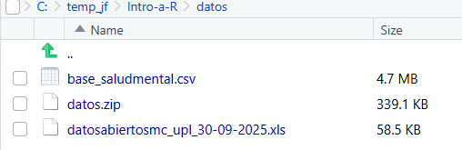
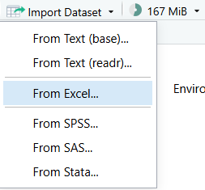
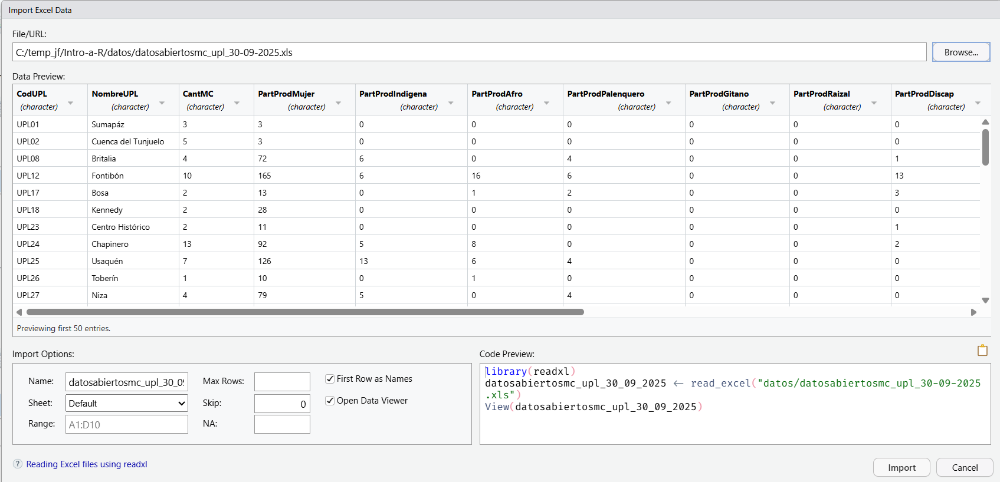
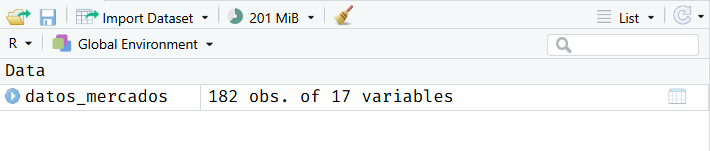
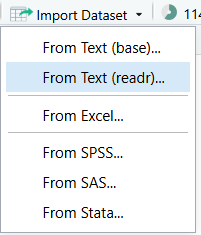
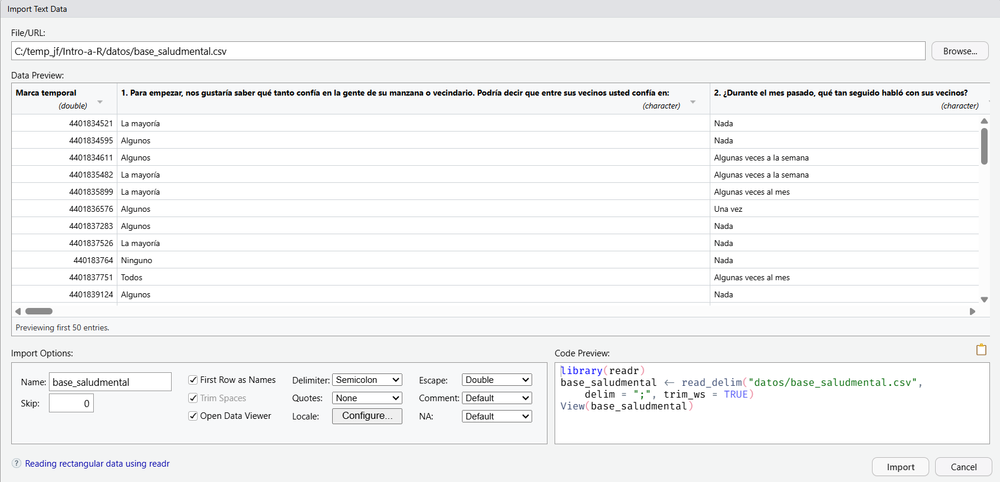
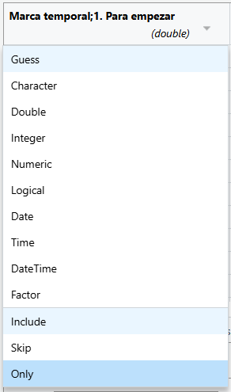

unzip(
zipfile = "datos/datos.zip",
exdir = "datos"
)Práctica - Importando y Explorando Datos
Objetivos
En esta práctica aprenderemos a:
- Importar datos desde archivos CSV y Excel
- Explorar datos usando funciones básicas
- Obtener resúmenes estadísticos de nuestros datos
NotaRequisitos
Asegúrate de estar trabajando dentro de un proyecto de RStudio con las carpetas data/, scripts/ y results/ creadas (como aprendiste en Tema 1).
0. Preparación
Descargar los Datos
Con este link se puede descargar el archivo ZIP con los conjuntos de datos que usaremos en esta práctica
Encuesta de percepción sobre salud mental durante la cuarentena por COVID - 19 en Bogotá obtenida de Bogota Datos Abiertos.
Mercados Campesinos en Bogotá por UPL disponibles a través de Bogota Datos Abiertos.
Guarda el archivo datos.zip en la carpeta datos de tu proyecto. Puedes descomprimir el archivo manualmente o usar R. El siguiente código te permite hacerlo desde la consola de R:
Los archivos descomprimidos deberían ser visibles ahora en la pestana Files.

Instalar Paquetes Necesarios
Si aún no los tienes, instala los paquetes necesarios:
install.packages("readr")
install.packages("readxl")Cargar Paquetes
Crea un script en la carpeta scripts del proyecto que creamos en la primera sesión. Guárdalo como 01-cargando-datos.R.
library(readr)
library(readxl)1. Importar Datos desde Excel
Para iniciar, vamos a usar el asistente para importar datos que tiene RStudio. En la pestaña Environment, puedes usar el botón Import Dataset > From Excel...

Luego de escoger el archivo datosabiertosmc_upl_30-09-2025.xls, el asistente le mostrará una muestra de los datos, los tipos de datos en cada columna (recuerde la estructura de los data.frames), algunas opciones para importar los datos, y el código que puede usar para importar los datos manualmente en el futuro.

Al darle clic al botón Import, el asistente corre el código directamente en la consola. Sin embargo, en esta ocasión queremos que el código quede guardado. La idea es que copies el código generado por el asistente y lo pegues en tu script 01-cargando-datos.R. El código debería verse así:
datosabiertosmc_upl_30_09_2025 <- read_excel(
"datos/datosabiertosmc_upl_30-09-2025.xls",
sheet = "Sheet1"
)Lo modificaremos un poco antes de correrlo. Por ahora, vamos a cambiar el nombre del objeto para que sea más sencillo de escribir. Usaremos datos_mercados en lugar del nombre largo generado por el asistente. Recuerda que el simbolo <- se usa para asignar un valor a un objeto en R, en este caso, el data.frame resultante de la importación de los datos.
Tip
Si al correr el código obtienes un error indicando que no se encuentra la función read_excel(), asegúrate de haber cargado el paquete readxl al inicio del script con library(readxl).
# Importar datos de mercados campesinos
datos_mercados <- read_excel(
"datos/datosabiertosmc_upl_30-09-2025.xls",
sheet = "Sheet1"
)Después de correr el código, el data.frame datos_mercados debería aparecer en la pestaña Environment.

Sabemos por el resumen en Environment que el data.frame tiene 182 filas (observaciones) y 17 columnas (variables). Vamos a explorar los datos un poco más. Primero, veamos los nombres de las columnas:
names(datos_mercados) [1] "CodUPL" "NombreUPL" "CantMC"
[4] "PartProdMujer" "PartProdIndigena" "PartProdAfro"
[7] "PartProdPalenquero" "PartProdGitano" "PartProdRaizal"
[10] "PartProdDiscap" "PartProdAdulto" "PartProdJoven"
[13] "PartProdMayor" "PartProdVictima" "PartProd"
[16] "Trimestre" "Año" Ahora, veamos las primeras filas del data.frame usando la función head():
head(datos_mercados)# A tibble: 6 × 17
CodUPL NombreUPL CantMC PartProdMujer PartProdIndigena PartProdAfro
<chr> <chr> <chr> <chr> <chr> <chr>
1 UPL01 Sumapáz 3 3 0 0
2 UPL02 Cuenca del Tunjuelo 5 3 0 0
3 UPL08 Britalia 4 72 6 0
4 UPL12 Fontibón 10 165 6 16
5 UPL17 Bosa 2 13 0 1
6 UPL18 Kennedy 2 28 0 0
# ℹ 11 more variables: PartProdPalenquero <chr>, PartProdGitano <chr>,
# PartProdRaizal <chr>, PartProdDiscap <chr>, PartProdAdulto <chr>,
# PartProdJoven <chr>, PartProdMayor <chr>, PartProdVictima <chr>,
# PartProd <chr>, Trimestre <chr>, Año <chr>Explorando la Estructura de los Datos
Exploremos un poco más la estructura del data.frame usando la función str():
str(datos_mercados)tibble [182 × 17] (S3: tbl_df/tbl/data.frame)
$ CodUPL : chr [1:182] "UPL01" "UPL02" "UPL08" "UPL12" ...
$ NombreUPL : chr [1:182] "Sumapáz" "Cuenca del Tunjuelo" "Britalia" "Fontibón" ...
$ CantMC : chr [1:182] "3" "5" "4" "10" ...
$ PartProdMujer : chr [1:182] "3" "3" "72" "165" ...
$ PartProdIndigena : chr [1:182] "0" "0" "6" "6" ...
$ PartProdAfro : chr [1:182] "0" "0" "0" "16" ...
$ PartProdPalenquero: chr [1:182] "0" "0" "4" "6" ...
$ PartProdGitano : chr [1:182] "0" "0" "0" "0" ...
$ PartProdRaizal : chr [1:182] "0" "0" "0" "0" ...
$ PartProdDiscap : chr [1:182] "0" "0" "1" "13" ...
$ PartProdAdulto : chr [1:182] "9" "6" "93" "166" ...
$ PartProdJoven : chr [1:182] "0" "2" "9" "30" ...
$ PartProdMayor : chr [1:182] "0" "0" "20" "35" ...
$ PartProdVictima : chr [1:182] "0" "0" "10" "7" ...
$ PartProd : chr [1:182] "9" "8" "122" "231" ...
$ Trimestre : chr [1:182] "1" "1" "1" "1" ...
$ Año : chr [1:182] "2023" "2023" "2023" "2023" ...La función str() nos da un resumen más detallado de la estructura del data.frame, incluyendo el tipo de cada variable y algunos de sus valores.
La salida del comando str() nos indica que todos los datos fueron importados como texto (chr), lo cual no es ideal para análisis posteriores. Esto podemos corregirlo en el código que importa los datos, especificando los tipos de columnas apropiados. Por ejemplo, podemos convertir las columnas que representan fechas a tipo Date, y las columnas numéricas a tipo numeric.
Usando el asistente para importar los datos nuevamente, vamos a seleccionar los tipos de datos apropiados para cada columna. El código resultante debería verse algo así:
datos_mercados <- read_excel(
"datos/datosabiertosmc_upl_30-09-2025.xls",
sheet = "Sheet1",
col_types = c(
"text",
"text",
"numeric",
"numeric",
"numeric",
"numeric",
"numeric",
"numeric",
"numeric",
"numeric",
"numeric",
"numeric",
"numeric",
"numeric",
"numeric",
"numeric",
"numeric"
)
)Esta vez, al correr el código se generan algunas advertencias indicando que algunas columnas no pudieron convertirse a numéricas debido a la presencia de valores no numéricos (por ejemplo, texto). Esto es normal, por ejemplo, cuando en lugar de 0 se encuentra un valor como “N/A” o “No disponible”. R convierte esos valores a NA (valor faltante) automáticamente.
Explora la estructura de los datos nuevamente con str(), y verifica que las columnas numéricas ahora son de tipo num. Ahora que las columnas numéricas han sido convertidas correctamente, podemos proceder a obtener un resumen estadístico básico de los datos usando la función summary():
summary(datos_mercados) CodUPL NombreUPL CantMC PartProdMujer
Length:182 Length:182 Min. : 1.000 Min. : 0.0
Class :character Class :character 1st Qu.: 4.000 1st Qu.: 28.0
Mode :character Mode :character Median : 7.000 Median : 89.0
Mean : 8.497 Mean :107.8
3rd Qu.:12.000 3rd Qu.:157.0
Max. :33.000 Max. :485.0
NA's :1 NA's :1
PartProdIndigena PartProdAfro PartProdPalenquero PartProdGitano
Min. : 0.00 Min. : 0.000 Min. : 0.000 Min. :0.00000
1st Qu.: 0.00 1st Qu.: 0.000 1st Qu.: 0.000 1st Qu.:0.00000
Median : 3.00 Median : 1.000 Median : 0.000 Median :0.00000
Mean : 7.05 Mean : 5.326 Mean : 1.177 Mean :0.05525
3rd Qu.:11.00 3rd Qu.: 8.000 3rd Qu.: 1.000 3rd Qu.:0.00000
Max. :62.00 Max. :32.000 Max. :15.000 Max. :2.00000
NA's :1 NA's :1 NA's :1 NA's :1
PartProdRaizal PartProdDiscap PartProdAdulto PartProdJoven
Min. :0.000 Min. : 0.000 Min. : 0.0 Min. : 0.00
1st Qu.:0.000 1st Qu.: 0.000 1st Qu.: 30.0 1st Qu.: 2.00
Median :0.000 Median : 2.000 Median :105.0 Median : 7.00
Mean :0.105 Mean : 5.724 Mean :131.5 Mean : 9.63
3rd Qu.:0.000 3rd Qu.: 9.000 3rd Qu.:198.0 3rd Qu.:13.00
Max. :8.000 Max. :40.000 Max. :547.0 Max. :73.00
NA's :1 NA's :1 NA's :1 NA's :1
PartProdMayor PartProdVictima PartProd Trimestre Año
Min. : 0.00 Min. : 0.00 Min. : 1.0 Min. :1.00 Min. :2023
1st Qu.: 7.00 1st Qu.: 2.00 1st Qu.: 41.0 1st Qu.:2.00 1st Qu.:2023
Median : 27.00 Median : 8.00 Median :144.0 Median :2.00 Median :2024
Mean : 32.81 Mean :14.17 Mean :175.3 Mean :2.42 Mean :2024
3rd Qu.: 51.00 3rd Qu.:18.00 3rd Qu.:260.0 3rd Qu.:3.00 3rd Qu.:2025
Max. :144.00 Max. :85.00 Max. :710.0 Max. :4.00 Max. :2025
NA's :1 NA's :1 NA's :1 NA's :1 NA's :1 Más adelante utilizaremos estos datos para hacer análisis más detallados.
2. Importar Datos de un Archivo Plano de Texto
Ahora vamos a importar datos desde un archivo CSV. Usaremos el archivo de la encuesta sobre salud mental durante la cuarentena por COVID-19 en Bogotá. Al igual que antes podemos usar el asistente para importar datos en RStudio. Esta vez seleccionamos Import Dataset > From Text (readr)...

En el asistente, seleccionamos el archivo base_saludmental.csv. El asistente nos muestra una vista previa de los datos y algunas opciones para la importación. Notemos que el archivo usa ; como separador en lugar de la coma , que es más común en archivos CSV. En la opcion Delimiter, seleccionamos Semicolon.

Como se trata de un archivo con muchas columnas, vamos a importar solo las primeras 6. Para ello, en la opción para seleccionar el tipo de datos, seleccionamos Only para las preguntas hasta la pregunta 5.

De nuevo, vamos a copiar el código generado por el asistente y pegarlo en nuestro script. El código debería verse así:
library(readr)
base_saludmental <- read_delim(
"datos/base_saludmental.csv",
delim = ";",
col_types = cols_only(
`Marca temporal` = col_guess(),
`1. Para empezar, nos gustaría saber qué tanto confía en la gente de su manzana o vecindario. Podría decir que entre sus vecinos usted confía en:` = col_guess(),
`2. ¿Durante el mes pasado, qué tan seguido habló con sus vecinos?` = col_guess(),
`3. ¿En un mes normal, antes de que comenzara el confinamiento en Bogotá a causa del COVID-19, con qué frecuencia hablaba con sus vecinos?` = col_guess(),
`4. ¿Durante el mes pasado, qué tan seguido habló con sus amigos y familiares (incluyendo medios electrónicos como chats, redes sociales, llamadas telefónicas, videollamadas, etc.)?` = col_guess(),
`5. En un mes normal, antes de que comenzara el confinamiento en Bogotá a causa del COVID-19, ¿con qué frecuencia hablaba con sus amigos y familiares (incluyendo medios electrónicos como chats, redes sociales, llamadas telefónicas, videollamadas, etc.)?` = col_guess()
),
trim_ws = TRUE
)
View(base_saludmental)Los conjuntos de datos con resultados de encuestas suelen tener muchas columnas, y cuyos nombres son largos y difíciles de manejar. Una buena práctica es renombrar las columnas con nombres más cortos y sencillos de usar.
Podemos renombrar las columnas para facilitar su uso posterior. Primero, veamos los nombres actuales de las columnas y guardemoslos en un objeto para referencia futura.
nombres_largos <- names(base_saludmental)
nombres_largos [1] "Marca temporal"
[2] "1. Para empezar, nos gustaría saber qué tanto confía en la gente de su manzana o vecindario. Podría decir que entre sus vecinos usted confía en:"
[3] "2. ¿Durante el mes pasado, qué tan seguido habló con sus vecinos?"
[4] "3. ¿En un mes normal, antes de que comenzara el confinamiento en Bogotá a causa del COVID-19, con qué frecuencia hablaba con sus vecinos?"
[5] "4. ¿Durante el mes pasado, qué tan seguido habló con sus amigos y familiares (incluyendo medios electrónicos como chats, redes sociales, llamadas telefónicas, videollamadas, etc.)?"
[6] "5. En un mes normal, antes de que comenzara el confinamiento en Bogotá a causa del COVID-19, ¿con qué frecuencia hablaba con sus amigos y familiares (incluyendo medios electrónicos como chats, redes sociales, llamadas telefónicas, videollamadas, etc.)?"
[7] "6. El gobierno ha promovido medidas de autocuidado (cuidarse a usted mismo) como el aislamiento social, el uso de tapabocas, el lavado de manos y mantener el distanciamiento físico. En una escala de 1 a 5, donde 1 equivale a \"nada\" y 5 a \"totalmente\": [¿Considera que usted ha cumplido con las medidas de autocuidado?]"
[8] "6. El gobierno ha promovido medidas de autocuidado (cuidarse a usted mismo) como el aislamiento social, el uso de tapabocas, el lavado de manos y mantener el distanciamiento físico. En una escala de 1 a 5, donde 1 equivale a \"nada\" y 5 a \"totalmente\": [¿Considera que sus familiares han cumplido con las medidas de autocuidado?]"
[9] "6. El gobierno ha promovido medidas de autocuidado (cuidarse a usted mismo) como el aislamiento social, el uso de tapabocas, el lavado de manos y mantener el distanciamiento físico. En una escala de 1 a 5, donde 1 equivale a \"nada\" y 5 a \"totalmente\": [¿Considera que sus vecinos han cumplido con las medidas de autocuidado?]"
[10] "7. Para usted, la estrategia de comunicación y la información presentada por la alcaldía en relación con el COVID-19 hasta este momento ha sido: [Clara]"
[11] "7. Para usted, la estrategia de comunicación y la información presentada por la alcaldía en relación con el COVID-19 hasta este momento ha sido: [Suficiente]"
[12] "7. Para usted, la estrategia de comunicación y la información presentada por la alcaldía en relación con el COVID-19 hasta este momento ha sido: [Verídica]"
[13] "7. Para usted, la estrategia de comunicación y la información presentada por la alcaldía en relación con el COVID-19 hasta este momento ha sido: [Oportuna]"
[14] "7. Para usted, la estrategia de comunicación y la información presentada por la alcaldía en relación con el COVID-19 hasta este momento ha sido: [Contradictoria]"
[15] "8. ¿Por qué medio o medios se entera usted de las decisiones tomadas por la Alcaldía frente al manejo del COVID-19? Puede marcar varias opciones"
[16] "9. ¿Sabe cómo actuar o a dónde acudir ante sospechas o sistemas de contagio?"
[17] "10. ¿Cree que cuenta con la información suficiente para conocer que es el COVID-19?"
[18] "11. Usted considera que la información que se le ha dado a la ciudadanía por parte de la alcaldía en relación a los riesgos asociados al COVID-19 ha sido:"
[19] "12. ¿Ha sido diagnosticado usted o algún conocido con COVID-19?"
[20] "13. Durante el periodo de cuarentena, en relación a su vida antes del confinamiento, usted: [Se ha sentido ansioso o nervioso]"
[21] "13. Durante el periodo de cuarentena, en relación a su vida antes del confinamiento, usted: [Se ha sentido decaído o deprimido]"
[22] "13. Durante el periodo de cuarentena, en relación a su vida antes del confinamiento, usted: [Se ha sentido tranquilo]"
[23] "13. Durante el periodo de cuarentena, en relación a su vida antes del confinamiento, usted: [Se ha sentido cercano a las personas con las que convive]"
[24] "13. Durante el periodo de cuarentena, en relación a su vida antes del confinamiento, usted: [Ha sentido interés o placer al hacer las cosas]"
[25] "13. Durante el periodo de cuarentena, en relación a su vida antes del confinamiento, usted: [Ha tenido problemas para dormir]"
[26] "13. Durante el periodo de cuarentena, en relación a su vida antes del confinamiento, usted: [Ha tenido desacuerdos con las personas con las que convive]"
[27] "14. Durante el periodo de cuarentena, en relación a su vida antes del confinamiento, usted: [Ha sentido la necesidad de consumir bebidas alcoholicas]"
[28] "14. Durante el periodo de cuarentena, en relación a su vida antes del confinamiento, usted: [Ha sentido la necesidad de fumar cigarrillos o tabaco]"
[29] "14. Durante el periodo de cuarentena, en relación a su vida antes del confinamiento, usted: [Ha sentido la necesidad de consumir algún tipo de sustancia psicoactiva]"
[30] "15. ¿De los siguientes factores, cuál o cuáles le han generado mayor preocupación o intranquilidad durante la cuarentena? Puede marcar varias opciones"
[31] "18. ¿En una escala de 1 a 5, donde 1 significa \"nada\" y 5 significa \"todo el que necesito\", qué tanto apoyo siente que ha recibido por parte de las siguientes personas o grupos durante el periodo de cuarentena? [Su pareja]"
[32] "18. ¿En una escala de 1 a 5, donde 1 significa \"nada\" y 5 significa \"todo el que necesito\", qué tanto apoyo siente que ha recibido por parte de las siguientes personas o grupos durante el periodo de cuarentena? [Su familia]"
[33] "18. ¿En una escala de 1 a 5, donde 1 significa \"nada\" y 5 significa \"todo el que necesito\", qué tanto apoyo siente que ha recibido por parte de las siguientes personas o grupos durante el periodo de cuarentena? [Sus amigos]"
[34] "18. ¿En una escala de 1 a 5, donde 1 significa \"nada\" y 5 significa \"todo el que necesito\", qué tanto apoyo siente que ha recibido por parte de las siguientes personas o grupos durante el periodo de cuarentena? [Su empleador o entidad educativa]"
[35] "18. ¿En una escala de 1 a 5, donde 1 significa \"nada\" y 5 significa \"todo el que necesito\", qué tanto apoyo siente que ha recibido por parte de las siguientes personas o grupos durante el periodo de cuarentena? [Sus vecinos]"
[36] "18. ¿En una escala de 1 a 5, donde 1 significa \"nada\" y 5 significa \"todo el que necesito\", qué tanto apoyo siente que ha recibido por parte de las siguientes personas o grupos durante el periodo de cuarentena? [La alcaldía]"
[37] "18. ¿En una escala de 1 a 5, donde 1 significa \"nada\" y 5 significa \"todo el que necesito\", qué tanto apoyo siente que ha recibido por parte de las siguientes personas o grupos durante el periodo de cuarentena? [El gobierno nacional]"
[38] "21. Sexo"
[39] "22. ¿Cuántos años tiene? (por favor escriba sólo el número de años cumplidos)"
[40] "Rango de edad"
[41] "23. ¿Usted, o alguna de las personas con las que convive ha sido diagnosticado con alguna de las siguientes enfermedades: Diabetes, hipertensión, enfermedades cardiacas, asma, enfermedad pulmonar obstructiva crónica, bronquitis o enfisema, condición de salud mental, enfermedades autoinmunes, sobrepeso u obesidad?"
[42] "24. ¿Cuál es el nivel educativo más alto que ha completado?"
[43] "25. ¿En qué localidad reside?"
[44] "26. ¿Cuál es su situación laboral actual?"
[45] "27. ¿Considera que las condiciones físicas de su vivienda le han permitido tener tranquilidad y comodidad durante la cuarentena?"
[46] "29. ¿Contándose a usted mismo, cuántas personas viven en su hogar?"
[47] "30. ¿Contándose a usted mismo, y según la edad de cada uno, cuántas personas viven en su hogar? [De 5 años o menos]"
[48] "30. ¿Contándose a usted mismo, y según la edad de cada uno, cuántas personas viven en su hogar? [Entre 6 y 18 años]"
[49] "30. ¿Contándose a usted mismo, y según la edad de cada uno, cuántas personas viven en su hogar? [Entre 19 y 64 años]"
[50] "30. ¿Contándose a usted mismo, y según la edad de cada uno, cuántas personas viven en su hogar? [De 65 años o más]"
[51] "17. ¿Considera que ha tenido la oportunidad de expresarle cómo se siente a otras personas?"
[52] "16. ¿Durante el último mes, con qué frecuencia ha realizado actividades físicas como bailar o practicar algún deporte?"
[53] "28. ¿En una escala de 1 a 5 donde 1 significa \"nada\" y 5 significa \"mucho\", siente que en su casa usted está expuesto a algún tipo de violencia?"
[54] "19. ¿Usted o alguna de las personas con las que vive ha sido diagnósticado con alguna enfermedad de salud mental que requiera tratamiento?"
[55] "20. En caso de que la respuesta a la pregunta anterior sea \"Sí\", ¿ha podido continuar el tratamiento durante el periodo de cuarentena?" Ahora, creemos un vector con los nuevos nombres simplificados, asegurándonos que el número de nuevos nombres coincida con el número de columnas en el data.frame y en el mismo orden.
nombres_simplificados <- c(
"timestamp",
"confianza_vecinos",
"frec_habla_vecinos_cuarentena",
"frec_habla_vecinos_pre",
"frec_habla_amigos_cuarentena",
"frec_habla_amigos_pre"
)La función names() nos permite también asignar nombres a las columnas de un data.frame.
# Renombrar columnas
names(base_saludmental) <- nombres_simplificadosCon los nuevos nombres, podemos seguir explorando los datos. Veamos las primeras filas con head():
head(base_saludmental)# A tibble: 6 × 55
timestamp confianza_vecinos frec_habla_vecinos_cuare…¹ frec_habla_vecinos_pre
<dbl> <chr> <chr> <chr>
1 4401834521 La mayoría Nada Algunas veces al mes
2 4401834595 Algunos Nada Nada
3 4401834611 Algunos Algunas veces a la semana Algunas veces a la se…
4 4401835482 La mayoría Algunas veces a la semana Algunas veces a la se…
5 4401835899 La mayoría Algunas veces al mes Algunas veces al mes
6 4401836576 Algunos Una vez Algunas veces al mes
# ℹ abbreviated name: ¹frec_habla_vecinos_cuarentena
# ℹ 51 more variables: frec_habla_amigos_cuarentena <chr>,
# frec_habla_amigos_pre <chr>, cumplimiento_propio <chr>,
# cumplimiento_familiar <chr>, cumplimiento_vecinos <chr>,
# com_alcaldia_clara <chr>, com_alcaldia_suficiente <chr>,
# com_alcaldia_veridica <chr>, com_alcaldia_oportuna <chr>,
# com_alcaldia_contradictoria <chr>, medios_info_alcaldia <chr>, …El data.frame tiene 55 columnas, muchas de las cuales son respuestas a preguntas de la encuesta. Más adelante, en el análisis de datos, seleccionaremos solo las columnas relevantes para nuestro análisis. La función summary() nos da un resumen de todas las columnas:
summary(base_saludmental) timestamp confianza_vecinos frec_habla_vecinos_cuarentena
Min. :4.402e+05 Length:4998 Length:4998
1st Qu.:4.402e+09 Class :character Class :character
Median :4.402e+09 Mode :character Mode :character
Mean :4.018e+09
3rd Qu.:4.403e+09
Max. :4.403e+09
frec_habla_vecinos_pre frec_habla_amigos_cuarentena frec_habla_amigos_pre
Length:4998 Length:4998 Length:4998
Class :character Class :character Class :character
Mode :character Mode :character Mode :character
cumplimiento_propio cumplimiento_familiar cumplimiento_vecinos
Length:4998 Length:4998 Length:4998
Class :character Class :character Class :character
Mode :character Mode :character Mode :character
com_alcaldia_clara com_alcaldia_suficiente com_alcaldia_veridica
Length:4998 Length:4998 Length:4998
Class :character Class :character Class :character
Mode :character Mode :character Mode :character
com_alcaldia_oportuna com_alcaldia_contradictoria medios_info_alcaldia
Length:4998 Length:4998 Length:4998
Class :character Class :character Class :character
Mode :character Mode :character Mode :character
sabe_como_actuar_contagio info_suficiente_covid info_riesgos_alcaldia
Length:4998 Length:4998 Length:4998
Class :character Class :character Class :character
Mode :character Mode :character Mode :character
diagnostico_covid_conocido sm_ansioso_nervioso sm_decaido_deprimido
Length:4998 Length:4998 Length:4998
Class :character Class :character Class :character
Mode :character Mode :character Mode :character
sm_tranquilo convivencia_cercano sm_interes_placer
Length:4998 Length:4998 Length:4998
Class :character Class :character Class :character
Mode :character Mode :character Mode :character
habito_problemas_dormir convivencia_desacuerdos habito_necesidad_alcohol
Length:4998 Length:4998 Length:4998
Class :character Class :character Class :character
Mode :character Mode :character Mode :character
habito_necesidad_fumar habito_necesidad_spa preocupacion_principal
Length:4998 Length:4998 Length:4998
Class :character Class :character Class :character
Mode :character Mode :character Mode :character
apoyo_pareja apoyo_familia apoyo_amigos apoyo_empleador
Length:4998 Length:4998 Length:4998 Length:4998
Class :character Class :character Class :character Class :character
Mode :character Mode :character Mode :character Mode :character
apoyo_vecinos apoyo_alcaldia apoyo_gob_nacional sexo
Length:4998 Length:4998 Length:4998 Length:4998
Class :character Class :character Class :character Class :character
Mode :character Mode :character Mode :character Mode :character
edad_numero rango_edad enf_cronicas_hogar nivel_educativo
Min. : 0.00 Length:4998 Length:4998 Length:4998
1st Qu.: 32.00 Class :character Class :character Class :character
Median : 41.00 Mode :character Mode :character Mode :character
Mean : 41.71
3rd Qu.: 52.00
Max. :548.00
NA's :13
localidad_residencia situacion_laboral condiciones_vivienda_comodidad
Length:4998 Length:4998 Length:4998
Class :character Class :character Class :character
Mode :character Mode :character Mode :character
num_personas_hogar_total num_personas_hogar_0_5 num_personas_hogar_6_18
Length:4998 Length:4998 Length:4998
Class :character Class :character Class :character
Mode :character Mode :character Mode :character
num_personas_hogar_19_64 num_personas_hogar_65_mas
Length:4998 Length:4998
Class :character Class :character
Mode :character Mode :character
oportunidad_expresar_sentimientos frec_actividad_fisica
Length:4998 Length:4998
Class :character Class :character
Mode :character Mode :character
riesgo_violencia_domestica diagnostico_sm_requiere_trat
Min. :1.000 Length:4998
1st Qu.:1.000 Class :character
Median :1.000 Mode :character
Mean :1.375
3rd Qu.:1.000
Max. :5.000
NA's :12
continuo_tratamiento_sm
Length:4998
Class :character
Mode :character
Del resumen podemos ver que la mayoria de las columnas texto. Podemos explorar los valores de una columna específica usando la función table(). Por ejemplo, veamos los valores únicos en la columna confianza_vecinos:
table(base_saludmental$confianza_vecinos)
Algunos La mayoría Ninguno Todos
2415 1464 933 182 También podemos generar tablas de frecuencias cruzando dos variables. Por ejemplo, veamos la relación entre confianza_vecinos y frec_habla_vecinos_pre:
table(
base_saludmental[, c("confianza_vecinos", "frec_habla_vecinos_pre")]
) frec_habla_vecinos_pre
confianza_vecinos Algunas veces a la semana Algunas veces al mes
Algunos 587 888
La mayoría 460 509
Ninguno 114 221
Todos 52 49
frec_habla_vecinos_pre
confianza_vecinos Casi todos los días Nada No está seguro Una vez
Algunos 217 389 39 289
La mayoría 174 179 14 127
Ninguno 38 420 13 126
Todos 21 42 3 15Es evidente que al menos para estas dos variables, se usaron escalas para las respuestas, más adelante veremos como transformar estas variales en factores ordenados para facilitar su análisis.